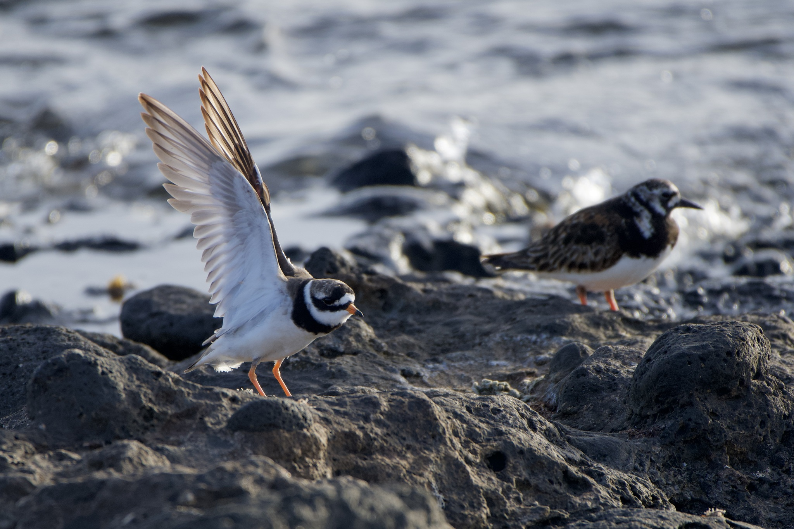

Charadrius hiaticula — A small shorebird feeding through runs and pauses
Identity and identification
Common Ringed Plover, Charadrius hiaticula, belongs to Charadriidae. AviList 2026 uses this English name; the French name is Grand Gravelot. Arabic sources also use the equivalent of Ringed Plover, while the Qatar bird guide records a specifically local name, rather than an Arabic-wide standard. This compact shorebird combines grey-brown upperparts, white underparts and a conspicuous dark breast band.
Age, sex and similar species
In breeding plumage the adult has a black face pattern, white forehead, black breast band, orange legs and an orange-based bill with a black tip. Winter markings become less emphatic and the bill may look dark. Juveniles have brown rather than strongly black markings and pale feather edges. Lack of extensive black is therefore not a safe shortcut to sexing. The sexes resemble one another, with females sometimes less sharply marked. Compared with Little Ringed Plover, this species is sturdier, shows a clear white wing bar in flight and lacks the striking yellow eye-ring characteristic of that species. Assess head, bill and wing together rather than relying on leg colour alone.
Habitats, food and behaviour
It uses sandy and shingle shores, lake margins and tidal flats, and may stop at suitable inland wetlands. A typical feeding sequence is a short run, a pause and a quick pick from the surface. Worms, crustaceans, molluscs and insects are taken according to habitat. Tides repeatedly redistribute feeding and resting areas. Flocks may mix with other waders, but association does not make their identities or habitat requirements interchangeable.
Breeding and life cycle
The main breeding range lies in northern and Arctic regions and parts of northwestern Europe. A shallow scrape on open ground or among pebbles usually holds four well-camouflaged eggs. Both parents incubate and tend the chicks, which move about and feed themselves soon after hatching. Adults may feign injury to divert danger from a nest; an observer encountering this behaviour should withdraw rather than search for eggs. Migration differs among populations, ranging from long journeys by northern birds to much shorter movements elsewhere.
Distribution and seasonality in the Arab world
Across the Arab region it is a widespread passage migrant and winter visitor. A November sighting on a beach is not evidence of breeding. Its range includes Mediterranean and North African shores, Egypt and eastern coasts extending to the Gulf, together with suitable inland stopping places. Qatar records common passage and winter occurrence and observations in every month, without those observations alone establishing nesting. In Lebanon, passage is concentrated in spring and late summer–autumn, with relatively few birds remaining in winter. Lebanese winter abundance should therefore not be described as equivalent to that of Gulf sites. November can combine late passage with settled wintering birds, and local counts change with tides and water conditions.
Ecological role and conservation
The global category is Least Concern, LC; this does not exclude deterioration at a particular site or within a population. By consuming invertebrates, the species participates in wetland food webs. Shoreline modification, wetland loss and disturbance by vehicles, dogs or repeated human approaches can reduce usable habitat. Ground nests are also vulnerable to trampling where breeding occurs. Observing from a sensible distance preserves feeding time and energy. Global status does not establish hunting permission, and European nesting calendars must not be applied indiscriminately to Arab countries.
References
AviList 2026 — Charadrius hiaticula.
BTO — BirdFacts: Ringed Plover.
EURING/CMS — Eurasian African Bird Migration Atlas: Charadrius hiaticula.
Scottish Seabird Centre — Ringed Plover.
Ramadan-Jaradi and Itani — Birds of Lebanon: A Photographic Guide to 409 Species, UNDP, second edition, 2026; Ramadan-Jaradi and colleagues — Sandgrouse 42, 2020.
Qatar Bird Observation Group — Common Ringed Plover; King Salman bin Abdulaziz Royal Reserve — bird checklist.
Photo: Dario Taraborelli — CC0-1.0.